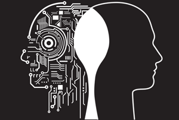
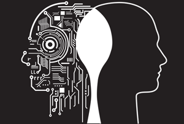

AI programming focuses on three cognitive skills: learning, reasoning and self-correction. Learning processes. This aspect of AI programming focuses on acquiring data and creating rules for how to turn the data into actionable information. The rules, which are called algorithms, provide computing devices with step-by-step instructions for how to complete a specific task. Reasoning processes. This aspect of AI programming focuses on choosing the right algorithm to reach a desired outcome. Self-correction processes. This aspect of AI programming is designed to continually fine-tune algorithms and ensure they provide the most accurate results possible. Advantages and disadvantages of artificial intelligence Artificial neural networks and deep learning artificial intelligence technologies are quickly evolving, primarily because AI processes large amounts of data much faster and makes predictions more accurately than humanly possible.
HOW DOES ARTIFICIAL INTELLIGENCE WORK?
Less than a decade after breaking the Nazi encryption machine Enigma and helping the Allied Forces win World War II, mathematician Alan Turing changed history a second time with a simple question: "Can machines think?"
Turing's paper "Computing Machinery and Intelligence" (1950), and it's subsequent Turing Test, established the fundamental goal and vision of artificial intelligence.

what is artificial intelligenceAt it's core, AI is the branch of computer science that aims to answer Turing's question in the affirmative. It is the endeavor to replicate or simulate human intelligence in machines.
for more information https://searchenterpriseai.techtarget.com/definition/AI-Artificial-Intelligence
The expansive goal of artificial intelligence has given rise to many questions and debates. So much so, that no singular definition of the field is universally accepted.
The major limitation in defining AI as simply "building machines that are intelligent" is that it doesn't actually explain what artificial intelligence is? What makes a machine intelligent?
In their groundbreaking textbook Artificial Intelligence: A Modern Approach, authors Stuart Russell and Peter Norvig approach the question by unifying their work around the theme of intelligent agents in machines. With this in mind, AI is "the study of agents that receive percepts from the environment and perform actions." (Russel and Norvig viii)
Norvig and Russell go on to explore four different approaches that have historically defined the field of AI:
Thinking humanly
Thinking rationally
Acting humanly
Acting rationally
The first two ideas concern thought processes and reasoning, while the others deal with behavior. Norvig and Russell focus particularly on rational agents that act to achieve the best outcome, noting "all the skills needed for the Turing Test also allow an agent to act rationally."
